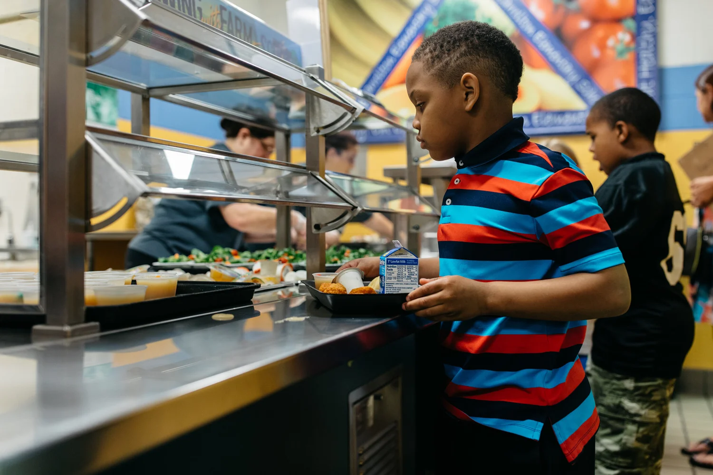

POLICY PRIORITIES
In the 2025-2026 legislative session we are focused on passage of “An act establishing a Massachusetts Farm to School Program” which would codify the MA FRESH farm to school grant program and create a local food incentive program for schools and early education programs.
Farm to school programs strengthen student achievement, improve nutrition, and grow the local economy. A Massachusetts Farm to School Program within the Department of Elementary and Secondary Education will support the infrastructure investments, staff training, and educational initiatives that lead to farm to school program success and sustainability. A local food incentive will help schools and early education programs consistently offer students healthy, locally grown foods as part of school meals. Providing schools with the resources they need to start up or expand local food sourcing and education activities is a win for our kids, our farmers, and our communities.
Contact your legislators and tell them why farm to school is important in your community and ask them to support the Farm to School bill (S.311 & H.565) this session.

BEYOND THE BILL
As members of the Feed Kids Coalition, we celebrate the establishment of universal free meals for all students in Massachusetts public K-12 schools.
In addition to the Farm to School bill, we support a number of bills to advance an equitable and strong local food system, such as increased funding for the Healthy Incentives Program. See the legislative priorities of the Massachusetts Food System Collaborative.
WHAT WE'RE WORKING FOR
Maximizing equitable access to school meals for every student.
More locally grown and produced food, and meals that are culturally connected to diverse students.
Engaging, garden-based, experiential learning for all students.